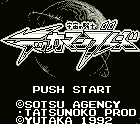

Tekkaman Blade - Gameboy Games

- Company: Yukata
- Date Released: 18 Dec 1992
- Price (in yen): 3500
- Genre: Platform game
Controls
- A button: Jump
- B button: Use Weapon
- Start: Power List
- Select: Pause
You start out with your trusty spear. By holding the B button down for a while, you can throw your
spear at an enemy. You must then pick up your spear to use it or wait a minute
for it to automatically return. Without your spear, your weapon is a whip with
a blade on the end. It can hurt enemies but not as much as the spear. The whip
can also be used while jumping to grab the ceiling. The Power List brings up
a list of Tekkaman powers you can use. They range from jet boosters to the
powerful Tekkaman cannons. While you move around the level, your energy builds
up allowing you to choose different powers. Using a power will drain the energy
meter. To jump higher than normal, hold down before jumping.
Anime Video Game Resource Center © 1998 by Luis A. Cruz